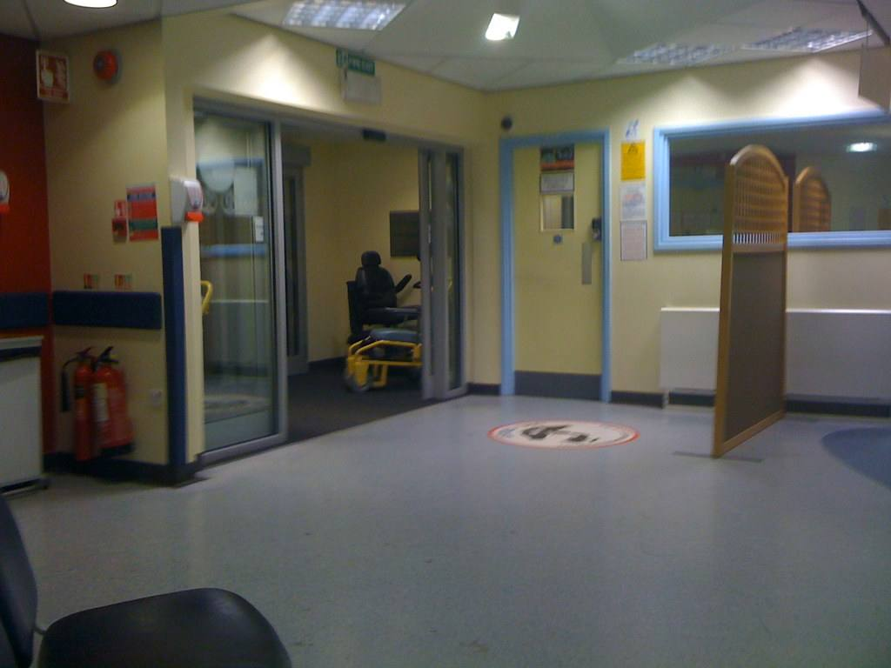

IEC OS se encarga del crecimiento y las operaciones de las prácticas médicas — servicios de MSO, personal, ciclo de ingresos y acceso de pacientes — mientras que las decisiones clínicas permanecen en manos de proveedores con licencia.
Conversar sobre su práctica
Estructuras de servicios de gestión que separan las operaciones comerciales de la atención clínica — modelos de personal, alcance administrativo y coordinación de proveedores. Diseñado junto con profesionales independientes en materia legal y de cumplimiento.
Personal clínico y administrativo para el crecimiento: contratación, incorporación y planificación de la fuerza laboral a través de la MSO — para que la expansión nunca se detenga por falta de personal.
Facturación, reclamaciones y disciplina en cuentas por cobrar. Reclamaciones limpias desde el primer día, denegaciones gestionadas e informes que usted realmente puede leer.
CURAVIA, nuestra plataforma para clínicas: recepción asistida por IA y recuperación de citas — para ocupar los espacios cancelados y atender la demanda fuera del horario. Actualmente en fase piloto.
Vinculación estructurada con proveedores que refieren, empleadores y socios comunitarios. Relaciones construidas de forma sistemática, no por casualidad.
Posicionamiento de líneas de servicio, búsqueda local y gestión de reseñas que reflejan las fortalezas reales de la práctica — en un lenguaje profesional y conforme a las normas.
El crecimiento se ve diferente para una práctica nueva, un grupo establecido y una organización que evalúa su próximo capítulo. IEC OS se adapta a la etapa del ciclo de vida — y coordina en conjunto las decisiones relacionadas con bienes raíces, personal y tecnología.
Comprender la práctica: capacidad, cuellos de botella, composición de pagadores y objetivos de crecimiento.
Estructurar el alcance de la MSO, el plan de personal y las prioridades de crecimiento con sus asesores.
Poner en marcha las operaciones módulo por módulo — primero el acceso y las reseñas.
IEC opera el lado comercial mes a mes. Usted ejerce la medicina.